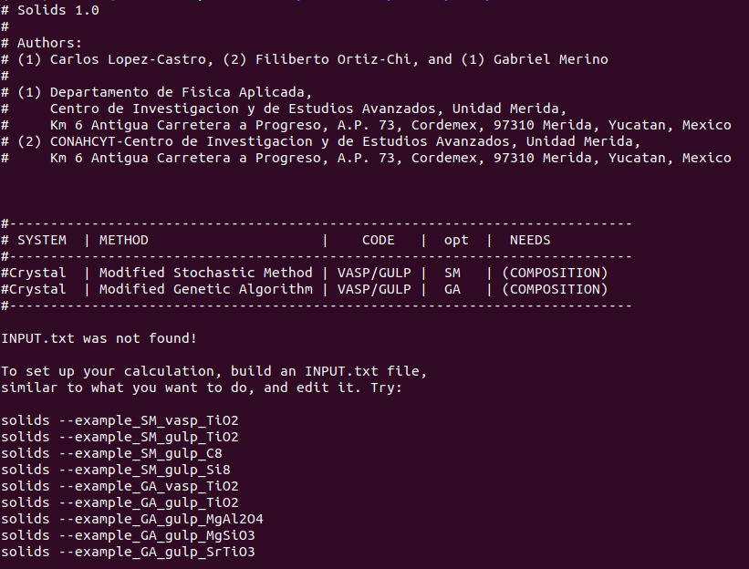

SOLIDS
Solids is a robust, open-source Python package for crystal structure prediction. It natively integrates with the Atomic Simulation Environment (ASE) and uses PyXtal and DScribe Python-libraries to generate symmetry-based random structures and compare their structural features using morphological descriptors. The package is available in the official Python Package Index repository and can be easily installed using pip. Solids can also be run directly in cloud computing environments, such as Google Colab or Kaggle, thanks to its support for ASE and the Effective Medium Theory (EMT) framework, which enable fast, and cost-effective computations. Furthermore, Solids is compatible with UNIX systems—such as Linux and macOS—and offers full integration with the GULP (General Utility Lattice Program) and VASP (Vienna Ab initio Simulation Package) codes, facilitating more rigorous first-principles calculations. Its versatility also allows it to run as a Python library within resource management systems such as PBS or SLURM, making it well-suited for use on computing clusters.
Solids performs energy landscape exploration through two main algorithms:
- The Stochastic Algorithm (SA) generates a set of random crystal structures based on specific space groups and relaxes them using any of the available codes (EMT, GULP, VASP).This simple approach has the advantage of performing relaxation in stages, meaning that the level of theory can be systematically adjusted or changed between them. In practice, this lets you explore the energy landscape efficiently—using low-cost levels of theory for the initial random structures and higher levels for the most promising ones.
- The Evolutionary Algorithm (EA) builds on SA by introducing evolutive operators—such as crossover and mutation—to improve the exploration of the potential energy surface. Unlike SA, this algorithm uses the same level of theory throughout the entire run, with refinement achieved through successive generations. Each generation creates new candidate structures by combining stable structural traits from previous ones, until a stopping criterion is reached. The EA is designed for more detailed and exhaustive explorations.

Su modularidad permite adaptar los módulos fácilmente. Además, almacena toda la información generada durante la simulación en archivos .txt y .vasp.
Solids’ Workflow
Puedes descargarlo desde GitHub: Repositorio oficial
Dentro del repositorio encontrarás las carpetas:
- Discriminate: Filtrado de estructuras repetidas.
- Gega: Implementación del algoritmo genético.
- Gulp: Interfaz con el código GULP.
- Inout: Lectura y validación de parámetros de entrada.
- Kick: Implementación del método estocástico.
- Queuing: Gestión de recursos computacionales.
- Utils: Clases auxiliares.
- Vasp: Interfaz con el código VASP.
El archivo solids es el principal ejecutable. Solo requiere mínima edición.
¿Cómo instalarlo?
Solids requiere una instalación previa de VASP o GULP y dependencias en Python 3.5 o superior. El paquete principal es PyXtal, el cual incluye bibliotecas como NumPy y Spglib.
Para instalar:
pip install pyxtalLuego, edita la primera línea del archivo solids para que apunte a tu intérprete de Python con PyXtal instalado.
Ejemplos
Para probar la instalación:
solidsPara generar un archivo de entrada usando TiO₂ con SM:
solids --example_SM_gulp_TiO2Esto genera un archivo INPUT.txt con parámetros como:
def saludo():
print("Hola, Solids!")
HOLA
Archivos de salida
Solids produce archivos como:
- solids_out.txt: Registro completo del proceso.
- initial.vasp: Estructuras iniciales.
- stageN.vasp: Estructuras por etapa de relajación.
- summary.vasp: Mejores estructuras encontradas.
- generationN/: Carpeta por generación con entradas/salidas.
Nombres comunes de archivos:
mating_001_001: Estructura generada por cruce.mutant_001_002: Resultado de mutación.random_001_004: Estructura aleatoria.